Así quedaria el workflow por ahora.
Este coge el .eslintrc.js que el proyecto ya tenia, y además he añadido unos cuantos ficheros y carpetas al .eslintignore que el job no debe corregir.
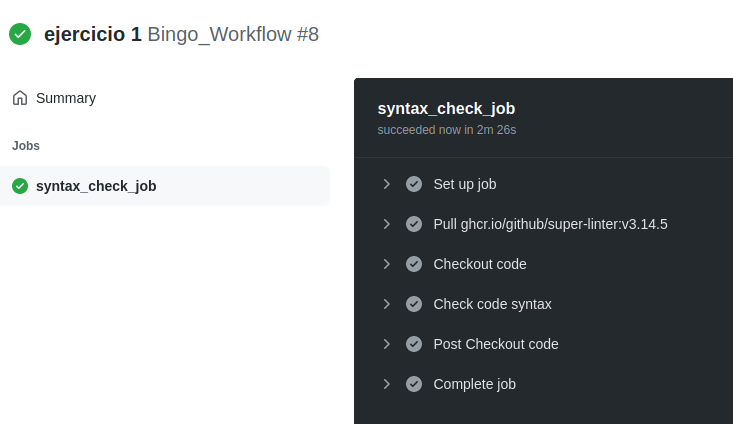Añadir al workflow anterior el siguiente job:
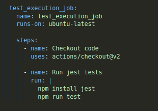Con este podremos comprobar los tests que ya tenia el bingo. Los comandos que utiliza este job son npm install jest y npm run test
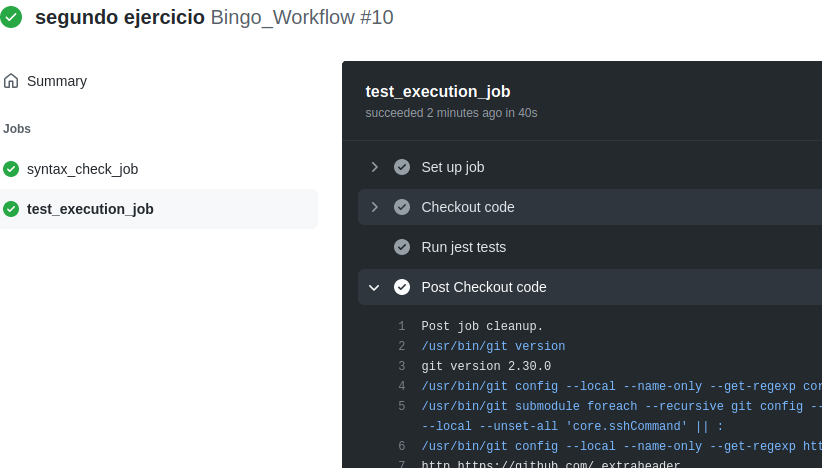Añadir al workflow anterior el siguiente job:
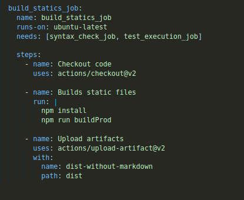Este job realiza un npm install y un npm run buildProd para construir los ficheros estáticos en un solo directorio, en mi caso /dist.
Y luego de hacer esto sube los artefactos generados en la ruta /dist.
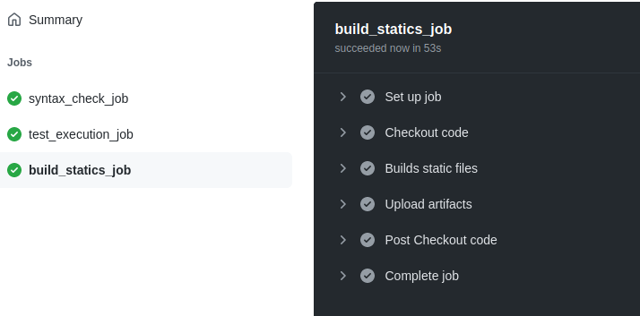Con este job vamos a desplegar la aplicación en surge.sh
- Primero debemos instalar surge en nuestro proyecto local, npm install -g surge
- Y también generar los ficheros estáticos localmente, npm run buildProd
- Una vez generados, desde dentro de la carpeta /dist, ejecutar surge para establecer el dominio de la página por primera vez
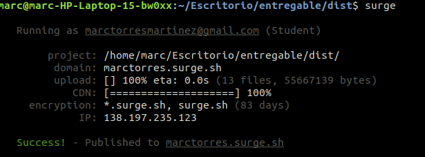- Ahora ya modificar el workflow y añadir el job para el deploy:
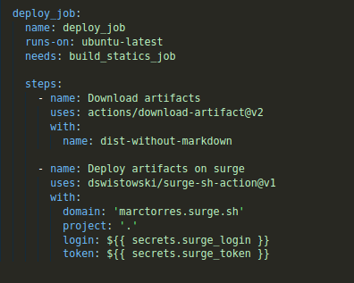Las dos variables, surge_login y surge_token, serán secrets del repositorio de Github, que tendremos que crear antes de hacer el push. El token se puede obtener con surge token y el surge_login es el tu usuario de GitHub
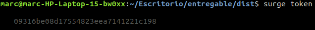 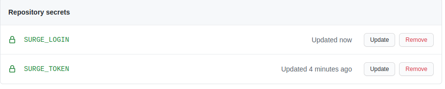 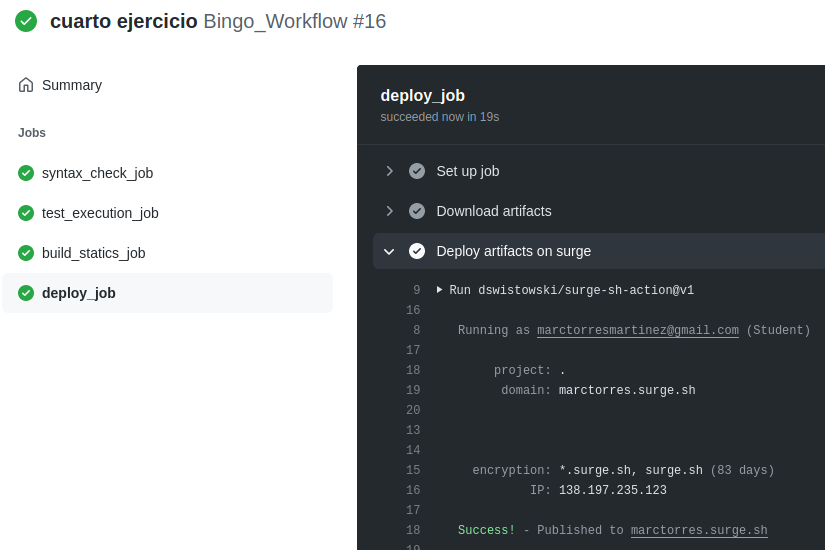Para este job he tenido que permitir fuentes no seguras acceder a mi correo, he desactivado la seguridad en dos pasos, y he cambiado mi contraseña de correo.
Tambíen he puesto mi correo y contraseña en los secrets de GitHub de este proyecto, para usarlos en el workflow.
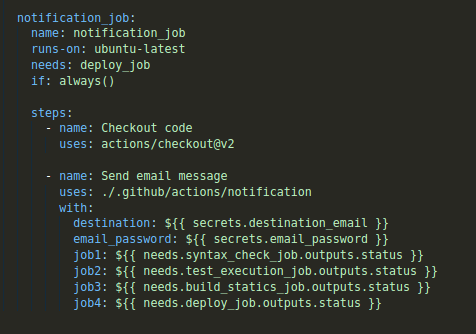 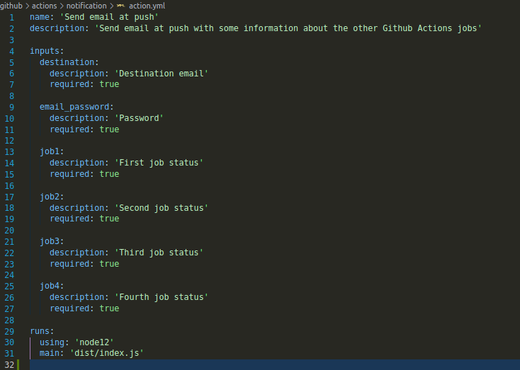Luego de esto ya hice el push:
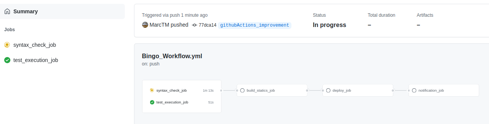 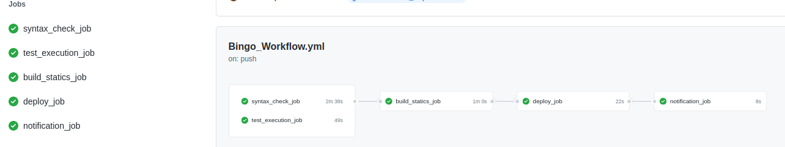Y recibí el correo:
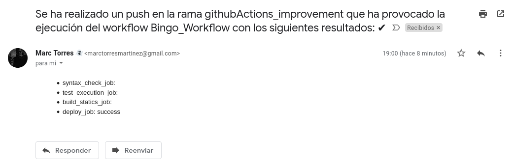